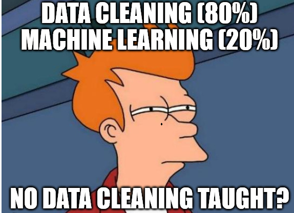

The ABC of Computational Text Analysis
#6 Learning Regular Expressions
Recap last Lecture
- well-solved assignment #1 :confetti_ball:
- counting words :1234:
- particular words or entire vocabulary
- preprocessing and cleaning :soap:
- Übung
- Fragen?
- Bearbeitungszeit unterschiedlich (1.5h - 8h)
- Beispiellösungen aufgeschaltet, andere Wege möglich
- ungewollte Hürde: locate nicht standardmässig installiert
- Frequenzanalysen
- Übersicht gewinnen: Wo liegen Schwerpunkte?
- komparative Vergleich über Zeit oder Akteure (z.B. Partei)
- vergleichbar mit Ngram-Viewer
Outline
- introducing regular expression :sparkles:
- practicing the writing of patterns :roller_coaster:
- Halbzeit von Semester, langsam gehts ans Eingemachte
- Simpler Plan, RegEx allerdings mühsam
- uralt, aber unumgänglich für Data Cleaning
- je nach Zeit, nächstes Mal nochmals RegEx + Übungszeit
Text as Pattern
Formal Search Patterns
How to extract all email addresses in a text collection?
Please contact us via info@organization.org.
---
For specific questions ask Mrs. Green (a.green@mail.com).
---
Reach out to support@me.ch:point_right: Solution: Write a single pattern to match any valid email adress
[A-Z0-9._%+-]+@[A-Z0-9.-]+\.[A-Z]{2,} # match any email address (case-insensitive)- Was meint Text als Pattern?
- am einfachsten an Problemstellung zu sehen
- Email-Adressen sind immer nach dem gleichen Muster aufgebaut
- ganze Sprache ist voller Muster –> Grammatik
- Frage an Studis: Wie macht ihr das?
- Bsp. Marketing-Analyse oder Wistleblower Korpus
- allen bekannt: Suche in Text
- Suche nach @ findet alle Adressen
- wie aber extrahieren und welche Teile gehören genau dazu?
- kryptisch + hässlich, aber beliebig expressive Beschreibungssprache
What are patterns for?
- finding :mag_right:
- extracting :hammer_and_wrench:
- removing/cleaning :wastebasket:
- replacing :repeat:
… specific parts in texts
- RegEx mit breiter Anwendung
- für Preprocessing Textanalysen unverzichtbar
- Data Cleaning
- funktioniert genau gleich in Python, R und anderen Programmiersprachen
Data Cleaning is paramount!

- Aufbereitung braucht viel Zeit
- einfaches Modell mit ein paar Zeilen Code, Bereinigung immer spezifisch für Datenquelle
What are Regular Expressions (RegEx)?
RegEx builds on two classes of symbols
- literal characters and strings
- letters, digits, words, phrases, dates etc.
- meta expressions with special meaning
- e.g.,
\wrepresents alphanumeric characters [Cc]o+l→ Col, col, Cool, coool …
- e.g.,
- akin to regular languages
- Regex = Muster = generalisierende Beschreibung
- Erklären von String = Zeichensequenz
- zwei Arten von Zeichen
- Literale = Zeichen steht für tatsächliches Zeichen (buchstabentreue Repräsentation)
- wie letztes Mal
- Meta-Zeichen = Zeichen mit spezieller Bedeutung
- anfänglich verwirrend
- Thema heutiger Sitzung
- genaue mathematische Definition hier nicht Thema
Finding + Extracting
extended globally search for regular expression and print (egrep)
- tool to filter/keep matching lines only
# check a regular expression quickly
echo "check this pattern" | egrep "pattern"
egrep "yes" file.txt # search in a specific file
egrep -r "yes" folder # search recursively within folder
egrep "yes" *.txt # keep lines containing pattern (yes) across txt-files
egrep -i "yes" *.txt # dito, ignore casing (Yes, yes, YES ...)
egrep -v "noisy" *.txt # do NOT keep lines containing noisy
# extract raw match only to allow for subsequent counting
egrep -o "only" *.txt # print match only instead of entire line
egrep -h "only" *.txt # suppress file name- Empfehlung: egrep benutzen statt grep
Quantifiers
repeat preceding character X times
?zero or one+one or more*zero or any number{n},{m,n}a specified number of times
egrep -r "Bundesrath?es" # match old and new spelling
egrep -r "a+" # match one or more "a"
egrep -r "e{2}" # match sequence of two "e":warning: Do not confuse regex with Bash wildcards!
- erste Klasse von Meta-Symbolen: Quantifikatoren
- definieren Anzahl von vorangehendem Zeichen
- in Regex beziehen sich Operatoren auf vorderes Zeichen, in Wildcard nicht
Character Sets
[...]any of the characters between brackets- any vowel:
[auoei] - any digit:
[0-9] - any letter:
[A-Za-z]
- any vowel:
[^...]any character but none of these (negation)- anything but the vowels:
[^auoei]
- anything but the vowels:
# match the capitalized and non-capitalized form
egrep -r "[Gg]rüne"
# match sequences of 3 vowels
egrep -r [aeiou]{3}
# extract all bigrams (sequence of two words)
egrep -rohi "[a-z]+ [a-z]+"Special Symbols
.matches any character (excl. newline)\escapes to match literal\.means the literal.instead of “any symbol”
\wmatches any alpha-numeric character- same as
[A-Za-z0-9_]
- same as
\smatches any whitespace (space, newline, tab)- same as
[ \t\n]
- same as
# match anything between brackets
egrep -r "\(.*\)"- Klammern sind auch Metasymbole
The power of .* …
matches any character any times
More Complex Examples
# extract basename of URLs
egrep -ro "www\.\w+\.[a-z]{2,}"
# extract valid email adresses (case-insensitive)
egrep -iro "[A-Z0-9._%+-]+@[A-Z0-9.-]+\.[A-Z]{2,}" **/*.txt- bei Erstellung von Online-Accounts prüfen RegEx Validität von Email
Combining RegEx with Frequency Analysis
something actually useful
# count political areas by looking up words ending with "politik"
egrep -rioh "\w*politik" **/*.txt | sort | uniq -c | sort -h
# count ideologies/concepts by looking up words ending with "ismus"
egrep -rioh "\w*ismus" **/*.txt | sort | uniq -c | sort -h- bis jetzt Spielerei, um RegEx zu lernen
- Grundlage für Seminararbeit
- systematisches Suchen, quantifizieren und analysieren von Begriffsverwendung
Start simple,
add complexity subsequently.
In-class: Exercise
- Use the command line to navigate to the local copy of the Github repository KED2023 and make sure it is up-to-date with
git pull. Change in to the directorymaterials/data/swiss_party_programmes/txt. - Use
egrepto extract all uppercased words likeUNO, OECD, SPand count their frequency. - Use
egrepto extract all plural nouns with female endings e.g.Schweizerinnen(starting with an uppercase letter, ending withinnen, and any letter in between). Do the same for the male forms. Is there a qualitative or a quantitative difference between the gendered forms?
# Some not so random hints
piping with |
sort
uniq -c
egrep -roh **/*.txtegrep -roh "[A-Z]{2,}" **/*.txt | sort | uniq -c | sort -h- Pause
- CTRL+C um Befehl abzubrechen (falls länger als eine Sekunde dauert, ist etwas falsch)
- Start mit einfachem grep-Befehl, dann schauen, was gematcht wird und dann auszählen
In-class: Solution
- Use
egrepto extract all uppercased words likeUNO, OECD, SPand count their frequency.egrep -roh "[A-Z]{2,}" **/*.txt | sort | uniq -c | sort -h
- Use
egrepto extract all plural nouns with female endings e.g.Schweizerinnen(starting with an uppercase letter, ending withinnen, and any letter in between). Do the same for the male forms. Is there a qualitative or a quantitative difference between the gendered forms?egrep -roh "[A-Z][a-z]+innen\b" **/*.txt | sort | uniq -c | sort -hegrep -roh "[A-Z][a-z]+er\b" **/*.txt | sort | uniq -c | sort -h(there is no way with regular expression to extract only nouns of the male form but notWasserand the like. For this, you have to use some kind of machine learning.)
Replacing + Removing
stream editor (sed)
- advanced find + replace using regex
sed "s/WHAT/WITH/g" file.txt
sedreplaces any sequence,tronly single symbols
echo "hello" | sed "s/llo/y/g" # replace "llo" with a "y"
# by setting the g flag in "s/llo/y/g",
# sed replaces all occurences, not only the first one- egrep für Extraktion, sed für Manipulation
- wichtig um Daten aufzubereiten
- wie Suchen-Ersetzen-Funktion von Word, nur mächtiger dank Regex
- Löschen = Ersetzen mit leeren Sequenz
- flag “global”
- Demonstration mit
echo "hello hell" | sed "s/l\b/lo/g"
Contextual Replacing
reuse match with grouping
- define a group with parentheses
(group_pattern) \1equals the expression inside first pair of parentheses\2expression of second pair- …
# swap order of name (last first -> first last)
echo "Lastname Firstname" | sed -E "s/(.+) (.+)/\2 \1/"
# matching also supports grouping
# match any pair of two identical digits
egrep -r "([0-9])\1"- Teilausdruck gruppieren zur Wiederverwendung
- Klammern sind ebenfalls Metazeichen
More Meta-Symbols
\bmatches word boundaryword\bdoes not matchwords
^matches begin of line and$end of line^Amatches onlyAat line start
|is a disjunction (OR)(Mr|Mrs|Mr\.|Mrs\.) Greenmatches alternatives
- diese Symbole sind leer, sie matchen keine Zeichen
- spezifizieren Positon von regulärem Ausdruck
- line start hilfreich für übung
Greediness Trap
- greedy ~ match the longest string possible
- quantifiers
*or+are greedy - non-greedy by excluding some symbols
[^EXCLUDE_SYMBOLS]instead of.*
# greedy: an apple, other apple
echo "an apple, other apple" | egrep "a.*apple"
# non-greedy: an apple
echo "an apple, other apple" | egrep "a[^,]*apple".*= jegliche Zeichen, beliebige Länge
Assignment #2 :writing_hand:
- get/submit via OLAT
- starting tomorrow
- deadline 15 April 2023, 23:59
- use forum on OLAT
- subscribe to get notifications
- ask friends for support, not solutions
In-class: Exercises I
- Use
egrepto extract capitalized words and count them. What are the most frequent nouns? - Use
egrepto extract words following any of these strings:der die das. Hint: Use a disjunction. - Do the self-check on the next slide.
- Use
sed -Eto remove the table of content, the footer and the page number in the programme of the Green Party. Check the corresponding PDF to get a visual impression and test your regular expression withegrepfirst to see if you match the correct parts in the document.
In-class: Solution I
- Use
egrepto extract capitalized words and count them. What are the most frequent nouns?egrep -roh "[A-Z][a-z]+" **/*.txt | sort | uniq -c | sort -h
- Use
egrepto extract words following any of these strings:der die das. Hint: Use a disjunction.egrep -roh "(der|die|das) \w+" **/*.txt
- Use
sed -Eto remove the table of content, the footer and the page number in the programme of the Green Party. Check the corresponding PDF to get a visual impression and test your regular expression withegrepfirst to see if you match the correct parts in the document.cat gruene_programme_2019.txt | sed "1,192d" | sed -E "s/^Wahlplattform.*2023$//g" | sed -E "s/^[0-9]+$//g"
In-class: Self-Check
equivalent patterns
a+ == aa* # "a" once or more than once
a? == (a|_) # "a" once or nothing
a{3} == aaa # three "a"
a{2,3} == (aa|aaa) # two or three "a"
[ab] == (a|b) # "a" or "b"
[0-9] == (0|1|2|3|4|5|6|7|8|9) #any digitIn-class: Exercise II
- Count all the bigrams (sequence of two words) using character sets and quantifiers. What about trigrams (three words)?
- Extract the words following numbers (also consider numbers like:
1'000, 1,000 or 5%). Then, count all the words while excluding the numbers themselves. Hint: Pipe another grep to remove the digits. - You are ready to come up with your own patterns…
In-class: Solution II
- Count all the bigrams (sequence of two words) using character sets and quantifiers. What about trigrams (three words)?
egrep -hoir "\b[a-z]+ [a-z]+\b" | sort | uniq -c | sort -hegrep -hoir "\b[a-z]+ [a-z]+ [a-z]+\b" | sort | uniq -c | sort -h
- Extract the words following numbers (also consider numbers like:
1'000, 1,000 or 5%). Then, count all the words while excluding the numbers themselves. Hint: Pipe another grep to remove the digits.egrep -rhoi "[0-9][0-9,'%]+ [a-z]+" | egrep -io "[a-z]+" | sort | uniq -c | sort -h- Alternative:
egrep -rhoi "[0-9][0-9,'%]+ [a-z]+" | sed -E "s/[0-9][0-9,'%]+//g" | sort | uniq -c | sort -h
In-class: Exercise III
Since you know about RegEx, we can use a more sophisticated tokenizer to split a text into words. What is the difference between the old and new approach? Test it and check the helper page with
man.# new, improved approach cat text.txt | tr -sc "[a-zäöüA-ZÄÖÜ0-9-]" "\n" # old approach cat text.txt | tr " " "\n"
More Resources
required
- Ben Schmidt. 2019. Regular Expressions.
- Cheatsheet of this course
highly recommended
- Nikolaj Lindberg. egrep for Linguists.
online regular expression editor
- regex101 to write and check patterns